韓国 2014年11月19日アップデート
※韓国公式と韓国人プレイヤーから頂いた情報を基にしています。誤訳や韓国独自仕様の可能性もありますので、予めご了承下さい。2014年11月19日 韓国アップデートの変更内容一覧
新機能追加
不具合修正
イベント
新機能追加
・HPバー/CPバーにカーソルを合わせることで、自身に支援スキルをかけることが可能になりました。
自キャラクターにカーソルを合わせる必要がなくなり、ギルドバトル混戦時でも自己支援が楽になります。
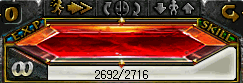
・ギルドメンバーや友録してある友達に、ログイン通知を通知しない機能が追加されました。
システムメニューの下2つの項目で、通知する/しないを設定できます。
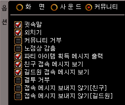
・ベルセルク称号に使用回数の表記が追加されました。
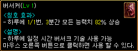 一日に1/1回、3分間すべての能力値82％上昇
・各ギルドメンバー個別に権限を設定できる機能が追加されました。
・ラカリフサ北の洞窟の変異スパイダーの湧き数が4箇所×3匹に増加しました。
メインクエスト5-3-1材料集めの混雑が少し緩和されそうです。
ただし、湧き時間は今までと同様90秒です。
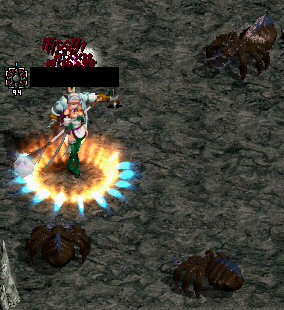 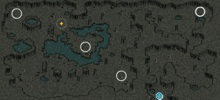
・過剰に派手なスキルエフェクトの透明度調整機能が追加されました。
システムメニューの一番下の項目で、透明度を約15段階ほど微調整することができます。
ただし主な広範囲エフェクトの全てのスキルに同じ透明度が適用されるため、スキル毎に個別の設定はできません。
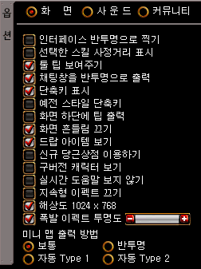
| 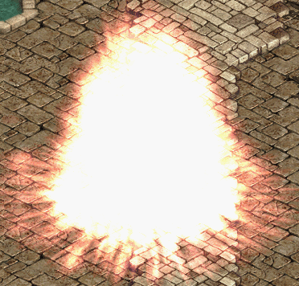 |
メテオシャワー 透過0％ |
| 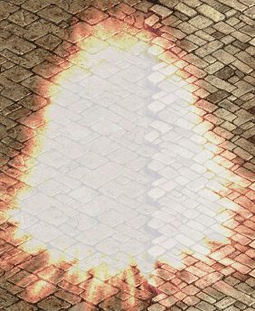 |
透過20％ |
| 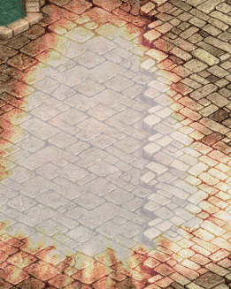 |
透過40％ |
| 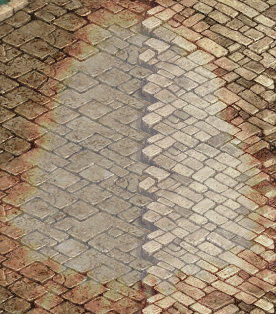 |
透過60％ |
| 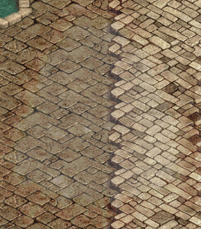 |
透過80％ |
| 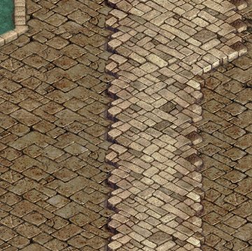 | 透過100％ ほぼ何も見えません…。 |
| 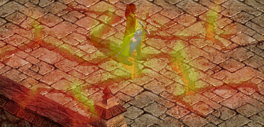 |
アースクエイク 透過50％ |
| 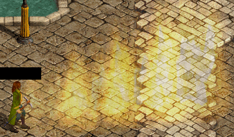 |
フレイムストーム 透過50％ |
| 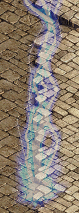 |
ライトニングサンダー 透過50％ |
| 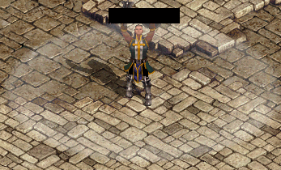 |
ターンアンデッド 透過50％ |
| 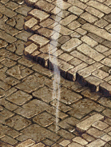 |
サンクンライトニング 透過50％ |
| 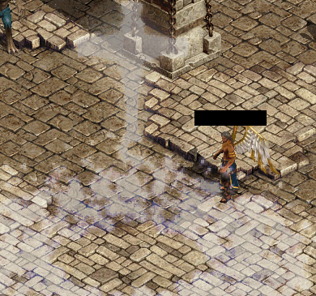 |
ホーリークロス 透過50％ |
| 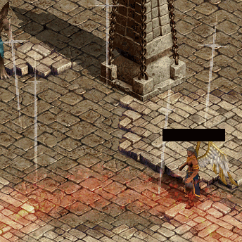 |
ジャッジメントデイ 透過50％ |
| 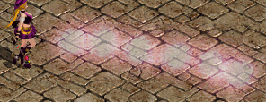 |
ブレストファイア 透過50％ |
| 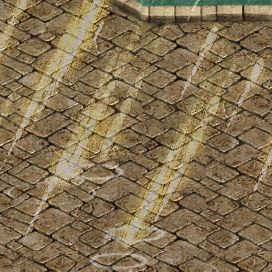 |
ウルトラノヴァ 透過50％ ライトニングワインダー、 花の乙女スペシャル、 ガールズパラダイスなどは 透過されません。 |
| 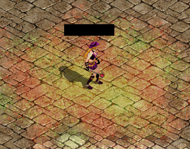 |
ローズガーデン 透過50％ |
| 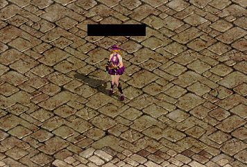 |
ローズガーデン 透過100％ ほぼ何も見えません…。 |
| 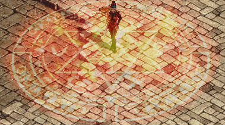 |
桜吹雪 透過50％ |
| 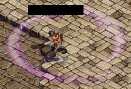 |
竜巻起こし 透過50％ |
| 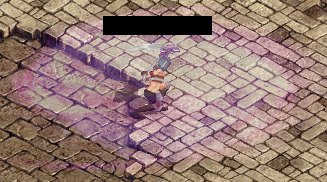 |
嵐斬り 透過50％ |
| 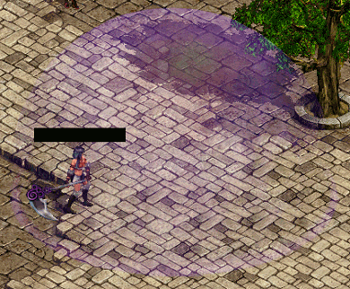 |
真空斬り 透過50％ |
| 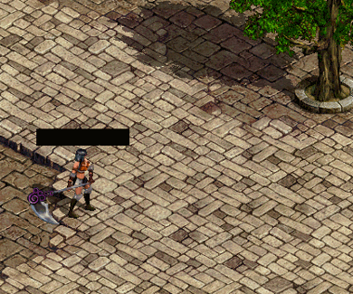 |
真空斬り 透過100％ ほぼ何も見えません…。 |
| 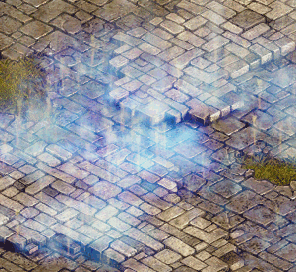 |
ウォーターフォール 透過50％ |
| 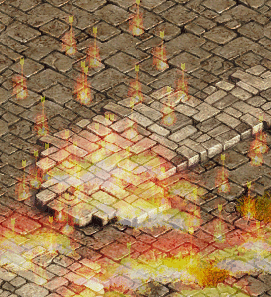 |
グライディングファイアー 透過50％ |
| 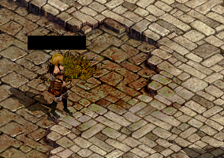 |
グライディングファイアー 透過100％ 僅かに黒く表示されます。 |
| 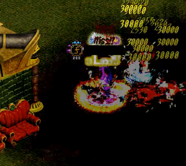 |
覚醒スキル グライディングブレイズ 透過100％ 透過処理が上手く適用されず なぜか真っ黒になります。 |
| 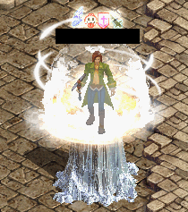 |
ファイアーエンチャント ヘイスト ミスティックフォッグ ファウンテンバリア トルネードシールド アイススタラグマイト 透過100％ 支援系スキルは透過されません。 |
| 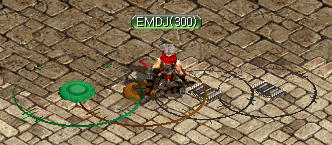 | マウストラップ ブービートラップ エクスプロージョントラップ ポイズントラップ 透過100％ 罠系スキルも透過されません。 |
全てのスキルに透過が適用されるわけではなく、広範囲エフェクトの主なスキルのみ透過されます。
不具合修正
メイドのハロウィンコスチュームを着用してスキルを使用すると、逆を向いていた不具合修正。
イベント
| 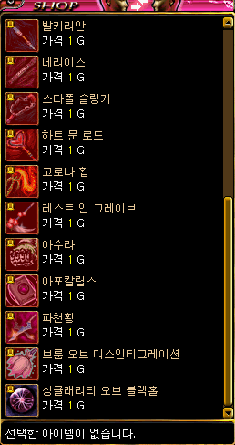 |
11月19日〜12月17日の期間限定で、 イベントNPCより伝説の武器を1日1Gで レンタルすることができます。 通常は、公認ネットカフェ限定の特典です。 |
| 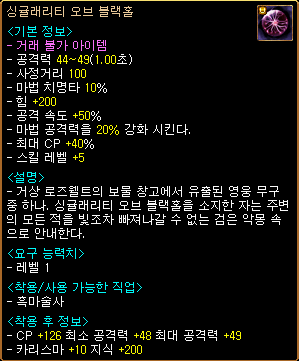 | 黒魔術師用の伝説の武器も 今回から追加されました。 |